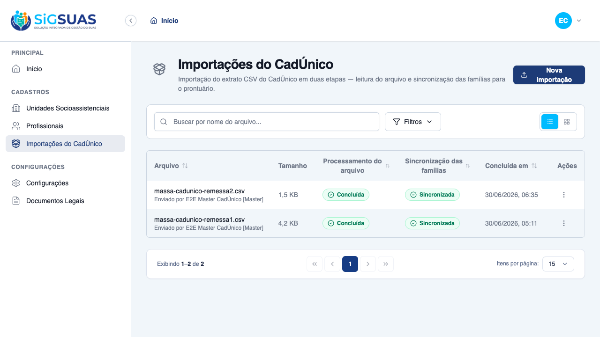
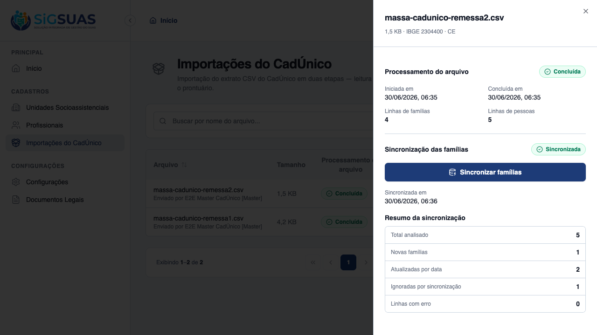
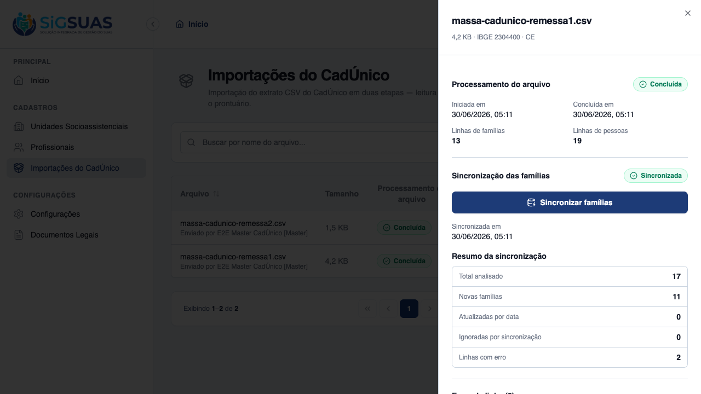

HU #9750 cobre a visualização do resultado consolidado da importação (CA08). Foram evidenciados ao vivo no client os 6 itens exigidos: na sheet de detalhe de cada lote — Total de Registros Analisados, Novas Famílias Criadas, Famílias Atualizadas por Data, Registros Ignorados, Total de Linhas com Erros — e a lista detalhada dos motivos das falhas. O histórico do tenant lista os lotes com status (processamento × sincronização), data e o executor com o sufixo [Master] (RN05/RN08), restrito ao próprio tenant (RN10). A suíte Pest (37 testes, 126 asserções, 100% verde) acompanha como apêndice.
| CA | Critério | Status |
|---|---|---|
| CA08 | Exibição de métricas detalhadas (resultado consolidado) | ATENDIDO · navegador |
Critério (Gherkin): Dado que o processamento do lote foi finalizado em segundo plano Quando o usuário acessa a tela de resultado ou consulta o histórico Então devem ser exibidos os contadores de negócio (Total de Registros Analisados, Novas Famílias Criadas, Famílias Atualizadas por Data, Registros Ignorados, Total de Linhas com Erros) e a lista detalhada dos motivos das falhas
Como foi testado: Logado como Master, na tela Importações do CadÚnico: (1) o histórico lista os lotes com status, data e executor; (2) Ver detalhes abre a sheet com o Resumo da sincronização (5 contadores) e a seção Erros de linha com os motivos. Massa: remessa1 (11 criadas + 2 erros) e remessa2 (1 criada, 2 atualizadas, 1 ignorada).



PASS Tests\Unit\Models\CadunicoImportErrorTest ✓ it is tenant-scoped and immutable (no updated_at) 0.53s ✓ it casts raw_row to array and line_number to integer 0.01s ✓ it persists raw_row as json and relates to its import 0.13s PASS Tests\Unit\Models\CadunicoImportTest ✓ it uses tenant scope, soft deletes, HasUuid and LogsActivity 0.02s ✓ it casts both statuses to their enums and defaults them 0.01s ✓ it casts counters to integers 0.01s ✓ it generates a uuid on create and resolves route by uuid 0.02s ✓ it relates to tenant, executor and errors 0.02s ✓ it hydrates the completed and synced factory states 0.02s PASS Tests\Feature\Api\Client\CadunicoImportControllerTest ✓ it validates a well-formed CSV and returns an upload token (CA01) 0.10s ✓ it rejects a CSV from a different município (RN01) 0.04s ✓ it rejects validation when the tenant has no município configured 0.03s ✓ it rejects a CSV with a divergent header (CA02) 0.03s ✓ it blocks validation when an import is already active (RN11/CA07) 0.03s ✓ it confirms the import and queues stage 1 (HU02) 0.03s ✓ it records the executor label with [Master] suffix when not a profe… 0.03s ✓ it rejects store with an unknown upload token 0.03s ✓ it does not sync an import that is not completed 0.03s ✓ it queues stage 2 when the import is completed (Etapa 2 manual) 0.03s ✓ it blocks sync when another batch is active in the tenant (RN11) 0.03s ✓ it lists only the tenant own history (CA12) 0.04s ✓ it returns 404 for a cross-tenant import (CA12/RN10) 0.03s ✓ it hides the module from an operador without the permission (CA03) 0.03s ✓ it stores a generic failure message without leaking exception detai… 0.03s PASS Tests\Feature\Services\Cadunico\CadunicoIngestServiceTest ✓ it loads persons (1 per row), dedups families and captures the muni… 0.02s ✓ it sanitizes CPF/NIS digits in the staging (RN09) 0.02s ✓ it throws when the header is missing required columns 0.02s PASS Tests\Feature\Services\Cadunico\CadunicoSyncServiceTest ✓ it creates a new family, domicile and members (CA04) 0.06s ✓ it updates by newer date and unlinks absent members without deletin… 0.06s ✓ it ignores the block when the file date is not newer (CA06) 0.05s ✓ it catalogs a block with missing update date (RN07) 0.05s ✓ it creates the family but catalogs a member without CPF as a warnin… 0.06s ✓ it discards the block when the responsible has no CPF (RN07) 0.05s ✓ it parses income in both decimal formats (#1) 0.05s ✓ it snapshots the responsible CPF on the family (#2) 0.05s ✓ it updates the SAME family when CadÚnico reissues the code, by resp… 0.05s ✓ it does not mass-unlink when the new block has members without NIS… 0.06s Tests: 37 passed (126 assertions) Duration: 2.37s